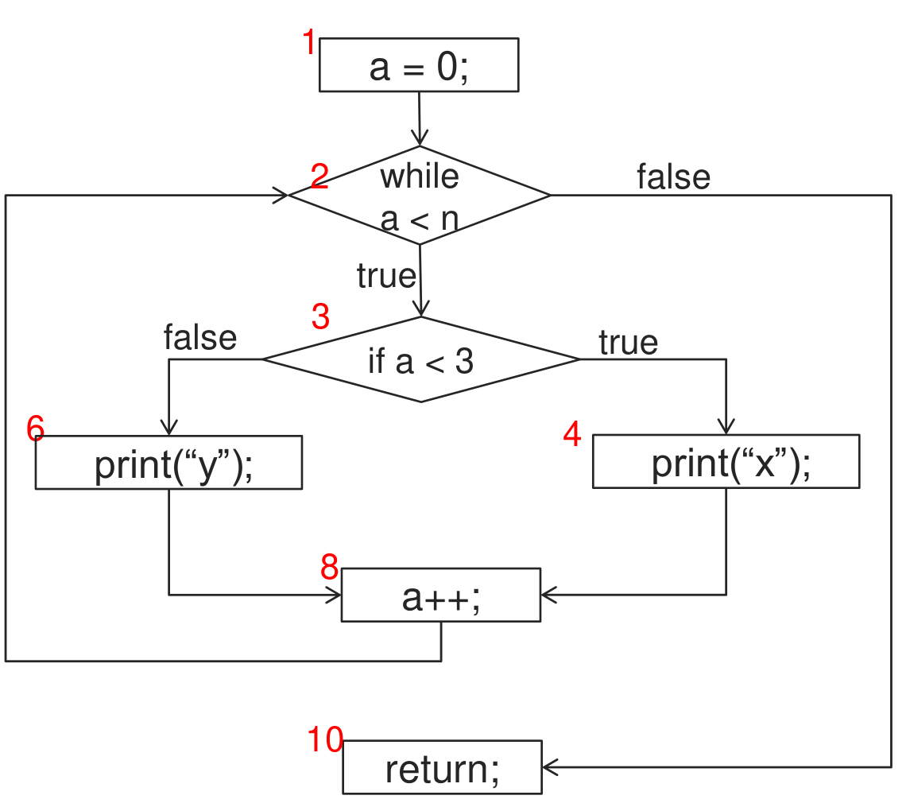

This was written entirely with AI.
This part covers lectures 16 to 18: test fundamentals, equivalence class testing and boundary value testing. Testing is the last SDLC activity in Part 1. The team checks the code against the requirements in the SRS (Part 4).
Why test, and why not test everything
A software bug is an error, flaw, failure or fault in a program that makes it give a wrong or unexpected result, or behave in a way that nobody intended. Even careful developers make them, so the team must look for them.
The obvious method is to run the program on every possible input. That fails at once. A function that takes one 16-bit integer has possible inputs. A function that takes two such integers has more than 4 billion combinations. Running them all costs too much time, even for a tiny function.
So the tester must choose a small set of inputs that is likely to find the bugs. The rest of this part is about how to choose them.
A small example of a hidden bug
The lecture uses this function. The specification says: take an integer, add 1, divide by 30 000 (integer division), and return the result.
int blech(int input) {
input = input - 1; // bug: the specification says + 1
return input / 30000;
}Try some inputs that look reasonable: 1, 42, 32 000, −31 218.
| Input | Correct result: (input + 1) / 30000 | Buggy result: (input − 1) / 30000 | Bug found? |
|---|---|---|---|
| 1 | 2 / 30000 = 0 | 0 / 30000 = 0 | No |
| 42 | 43 / 30000 = 0 | 41 / 30000 = 0 | No |
| 32 000 | 32 001 / 30000 = 1 | 31 999 / 30000 = 1 | No |
| −31 218 | −31 217 / 30000 = −1 | −31 219 / 30000 = −1 | No |
(Java integer division drops the fraction towards zero, so −31 217 / 30000 = −1.)
None of these inputs finds the bug. The bug shows only where the result changes from one value to the next. For example, at input 29 999 the correct result is 30 000 / 30000 = 1, but the buggy code gives 29 998 / 30000 = 0. Random inputs rarely land on that edge. Boundary value testing (later in this part) aims at exactly these edges.
What testing is
Testing is not debugging. Debugging finds the cause of a known bug and removes it. Testing finds out whether bugs exist.
Testing also cannot show that software works. A test that passes shows only that this input worked. As Dijkstra put it, testing can show the presence of bugs, but never their absence.
The course definition:
Software testing is an investigation conducted to provide stakeholders with information about the quality of the software product or service under test.
In practice, testing has two aims:
- to find bugs, not to prove that there are none;
- to reduce the risk that the system does not work to an acceptable level, without too much testing effort.
Testing in this sense is dynamic: the tester runs the code. (Reviews and inspections of code without running it are static checks.)
Types of testing: black box and white box
The two types differ in what the tester looks at.
| Black box testing | White box testing | |
|---|---|---|
| What the tester analyses | The requirements and specification only. The code is a closed box. | The implementation: internal paths and structure of the code. |
| Example input to the analysis | “The income of an applicant must be between $1500 and $8000 per month.” | The if and while statements of a
function. |
| Techniques in this course | Equivalence class testing, boundary value testing, state-based testing | Control flow testing (basis path testing), data flow testing |
| Coverage | No measure of how much code was run | Can measure statement, branch and path coverage |
This course covers equivalence class and boundary value testing in depth, and basis path testing briefly.
Levels of testing
Tests also differ in how much of the system they run at once.
| Level | What is tested | Who usually does it |
|---|---|---|
| Unit testing | One unit (a method or a class) by itself | The developer |
| Integration testing | Several units together: do their interfaces fit? | The developers or a test team |
| System testing | The whole system: functions, usability, reliability, performance, portability, security | A test team |
| Acceptance testing (UAT, user acceptance testing) | The customer checks the system against their needs | The customer |
This course works at the unit level. The black box techniques below work at every level.
What a test case contains
A test case is one run of the program with chosen inputs and a known expected result. It has five ingredients:
| Ingredient | Meaning |
|---|---|
| Name | A distinct name for the test case |
| Location | The path to the test program and its inputs |
| Input | The input data or commands |
| Oracle | The expected output. The tester works it out from the specification, before the run. |
| Log | The actual output that the test produced |
The test passes when the log matches the oracle.
In a test table, each row is one test case. The input columns are the inputs, the “expected result” column is the oracle, and the “test result” column is the log.
In code, a unit test framework such as JUnit holds the same
ingredients. The test method name is the name. The variables set before
the call are the input. assertEquals(expected, actual)
compares the oracle with the log.
Order of test cases
Test cases can depend on each other or stand alone.
| Cascading test cases | Independent test cases | |
|---|---|---|
| How | Each test uses the state that the test before it left. Example: create an order, read it, update it, delete it, then read the deleted order. | Each test sets up everything that it needs. |
| Good | Each test is small and simple. | Tests can run in any order, and in parallel. One failure does not affect the others. |
| Bad | If one test fails, the tests after it may be invalid. | Each test is larger and more complex. |
Black box testing
The process
The tester:
- Analyses the requirements or specification to find the equivalence classes and boundary values. This is the hardest step.
- Chooses valid inputs and invalid inputs from them.
- Works out the expected output (the oracle) for each chosen input.
- Writes the tests, for example as a JUnit program.
The testing engine (for example JUnit) then:
- Runs the tests.
- Compares the actual outputs (the log) with the expected outputs (the oracle).
- Reports whether the system under test (SUT) works properly.
Pros and cons
- Pro: it directs the tester to a very small set of inputs that are likely to find bugs.
- Pro: it works at all levels: unit, integration, system and acceptance.
- Con: the tester cannot know how much of the code the tests ran. There is no notion of coverage, as there is in white box testing.
Two assumptions
Black box testing works only if two things are true.
1. The requirements are verifiable. The tester needs exact rules to derive classes from. “The company must not hire too-young or too-old people” gives no classes. “Do not hire ages 0–15 and 55–99. Hire ages 16–17 part-time. Hire ages 18–54 full-time” gives exact classes. This is the same “verifiable” rule as in Parts 2 and 4.
2. The code is testable. Black box testing assumes
that the code treats all values in a class the same way. Code that tests
each value separately
(if (age == 16) ... if (age == 17) ...), or that has a
hidden special case
(if (age == 35 && name == "...") hire = CEO),
breaks this assumption. One value per class can then miss a bug in a
neighbouring value.
Equivalence class testing
The idea
Take the hiring rules above. A tester could try every age: …, −1, 0, 1, 2, …, 99, 100, 101, … That is far too many. But all ages from 18 to 54 should give the same answer, “full-time”. If the code is wrong for 30, it is probably wrong for 31 too. If it is right for 30, it is probably right for 31.
So group the inputs. An equivalence class (EC) is a set of input values such that:
- they are all supposed to produce the same output;
- if one value catches a bug, the others probably will too;
- if one value does not catch a bug, the others probably will not either.
Then test one value from each class instead of every value. The lecture compares this to tasting one grain of rice to check if the whole pot is cooked.
The tester:
- Identifies the valid and invalid equivalence classes that partition each input.
- Chooses at least one value from each class of each input.
- Works out the expected output for each chosen value.
- Writes the tests.
Rule 1: a range of values gives one valid class and two invalid classes
When the requirement gives a range (a lower and an upper limit), the number line splits into three parts.

How to read the figure. The requirement is “the system approves a mortgage application if income is between $1500/month and $80 000/month”. The grey bar is the valid class: 1500 ≤ x ≤ 80 000. The arrow on the left is the invalid class below it: x ≤ 1499. The arrow on the right is the invalid class above it: x ≥ 80 001. The two invalid classes are separate, because the code can fail in a different way below the range than above it.
More lecture examples of the same rule:
| Requirement | Valid EC | Invalid ECs |
|---|---|---|
| Number of mortgages per applicant is between 0 and 5 | 0 ≤ x ≤ 5 | x ≤ −1; x ≥ 6 |
| Password length is 4 to 8 characters | 4 ≤ length ≤ 8 | length ≤ 3; length ≥ 9 |
When one input has several valid ranges, each range is its own valid class, because each gives a different output. The hiring rules give:
| Valid ECs | Output |
|---|---|
| 0 ≤ age ≤ 15 | Do not hire |
| 16 ≤ age ≤ 17 | Part-time |
| 18 ≤ age ≤ 54 | Full-time |
| 55 ≤ age ≤ 99 | Do not hire |
| Invalid ECs |
|---|
| age ≤ −1 |
| age ≥ 100 |
Note that 0–15 and 55–99 give the same output but are still two classes. They are on different sides of the number line, so a bug can affect one and not the other.
Rule 2: a set of discrete values gives one valid class and one invalid class
When the requirement lists allowed values with no order between them, there is one set of allowed values and one set of everything else.

How to read the figure. The requirement is “the system approves only personal mortgage applications”. The left ellipse holds the only valid value, Person. The right ellipse holds everything else (Trust, Company, Partnership, …). The “…” means the invalid class is open: any other value belongs to it.
More lecture examples:
| Requirement | Valid EC | Invalid EC |
|---|---|---|
| Property type must be HDB or Condo | {HDB, Condo} | {Townhouse, Mobilehome, …} |
| Password characters must be a–z, A–Z or 0–9 | {a … z, A … Z, 0 … 9} | {+, −, (, ), …} — any other character |
Applying the rules to common input types
Specifications usually describe inputs in a few standard forms. The two rules above handle all of them. In each case, state your assumptions, because the specification often leaves something open. (The worked forms below apply the lecture’s two rules. The lecture does not list them in this form.)
| Input described as | Kind | Valid EC | Invalid ECs |
|---|---|---|---|
| A number from a to b | Range | a ≤ x ≤ b | x < a; x > b |
| An n-digit integer | Range. Assume no sign and no leading zeros, so the smallest is and the largest is . | ≤ x ≤ . For 3 digits: 100 ≤ x ≤ 999. | x ≤ 99; x ≥ 1000. Also non-numeric text, if the field accepts text. |
| A date between year p and year q | Range | 1 Jan p ≤ d ≤ 31 Dec q | d < 1 Jan p; d > 31 Dec q. Also impossible dates (31 Feb), if the field accepts free text. |
| One of a list: “A”, “B” or “C” | Discrete | {A, B, C} | Any other value, including an empty value |
| Text in a given format (for example ASCII only) | Discrete, on each character | Strings of allowed characters only | Strings that contain at least one other character |
| Text of length a to b | Range, on the length | a ≤ length ≤ b | length < a; length > b |
Two notes on these:
- Say what you assume. Can an n-digit number have a sign or leading zeros? Does “between 2020 and 2025” include both years? Is an empty string allowed? Write the assumption, then derive the classes from it. Another reasonable assumption gives other classes, and that is fine if you state it.
- One input can have more than one rule. A password can have a length rule (range) and a character rule (discrete). Treat them as two separate sets of classes.
Designing test cases from equivalence classes
A function usually has several inputs. Each test case gives a value for every input. The rules for combining them:
Valid inputs: combine freely
- Test valid values of several inputs in the same test case.
- Choose one valid value from a valid class of each input.
- If every input has only one valid class, one test case already covers all valid classes.
- If a valid class has only a few values, you may test them all (for example, number of mortgages 0 to 5, or property type HDB and Condo). Do not try this for a large range such as income.
Lecture example (inputs: income, number of mortgages, applicant type, property type):
| Income | Mortgages | Applicant type | Property type | Expected result |
|---|---|---|---|---|
| $1500 | 0 | Person | Condo | Approval |
| $2000 | 1 | Person | Condo | Approval |
| $5000 | 2 | Person | Condo | Approval |
| $12 345 | 3 | Person | HDB | Approval |
| $76 543 | 4 | Person | HDB | Approval |
| $80 000 | 5 | Person | HDB | Approval |
The table covers all six mortgage counts and both property types, and uses a different income each time.
Invalid inputs: one per test case
- Put only one invalid value in each test case.
- Give every other input a valid value.
Why: suppose a test case has four invalid inputs ($100, 8 mortgages, Company, Mobilehome) and the system rejects it. You cannot tell which input caused the rejection. Maybe the system checks only income and ignores the other three. With one invalid input per test case, each rejection shows that that input is handled.
Lecture example:
| Income | Mortgages | Applicant type | Property type | Expected result |
|---|---|---|---|---|
| $100 | 1 | Person | Condo | Reject |
| $81 000 | 2 | Person | HDB | Reject |
| $5000 | −1 | Person | Condo | Reject |
| $10 000 | 8 | Person | HDB | Reject |
| $12 345 | 3 | Company | HDB | Reject |
| $76 543 | 4 | Person | Mobilehome | Reject |
Each bold value is the one invalid input. Note that each invalid class gets its own row: income below and income above, mortgages below and above.
Should you test invalid inputs at all?
There are two views.
- Testing by contract: test only valid inputs, that is, inputs that meet the pre-conditions of the function. The caller is responsible for passing valid values.
- Defensive testing: test both valid and invalid inputs. Do not assume that users will use the code the way it was meant to be used. Check that the code handles invalid input as expected, with no unforeseen error and no sudden crash.
Testers prefer defensive testing. If the system fails in use, the testers get the blame. When a question asks for defensive testing, give both the valid rows and one row per invalid class.
Boundary value testing
Why boundaries
Developers often get the edge of a range wrong: <
instead of <=, or + 1 instead of
− 1, as in the blech example. One value from
the middle of a class does not find these bugs. So, on top of the
equivalence classes, test the values at the edges of
each class.
Boundary value testing (BVT) applies only to ranges. A set of discrete values (such as property type) has no order, so it has no boundaries.
The process
- Find the lower and upper boundary of each equivalence class of every range input.
- For each boundary, choose three values: one on the boundary, one just below it and one just above it.
- “Just below” and “just above” depend on the unit of the value: 1 for whole numbers, 0.01 for dollars and cents, one day for dates, one character for string length.
- Do not repeat test cases. If a just-below or just-above value falls into another class, it may already be on the list.
- Work out the expected output for each value, and write the tests.
Examples from the lecture
| Valid EC | Lower boundary: below, on, above | Upper boundary: below, on, above | Valid BVs | Invalid BVs |
|---|---|---|---|---|
| Income 1500 ≤ x ≤ 80 000 | 1499, 1500, 1501 | 79 999, 80 000, 80 001 | 1500, 80 000 | 1499, 80 001 |
| Mortgages 0 ≤ x ≤ 5 | −1, 0, 1 | 4, 5, 6 | 0, 5 | −1, 6 |
| Password length 4 ≤ x ≤ 8 | 3, 4, 5 | 7, 8, 9 | 4, 8 | 3, 9 |
The value on the boundary is valid. For a single valid range, the value just outside it is invalid. The value just inside (1501, 79 999) is valid and adds little, because the on-boundary value already tests the valid side.
Several valid ranges next to each other
For the hiring rules, the classes touch each other. The just-outside value of one class is the on-boundary value of the next.
| Class | Lower boundary | Upper boundary |
|---|---|---|
| 0–15 (do not hire) | −1, 0, 1 | 14, 15, 16 |
| 16–17 (part-time) | 15, 16, 17 | 16, 17, 18 |
| 18–54 (full-time) | 17, 18, 19 | 53, 54, 55 |
| 55–99 (do not hire) | 54, 55, 56 | 98, 99, 100 |
Remove the duplicates. 15 and 16 appear as “just above 15” and as “on 16”, and so on. What is left:
- Valid boundary values: 0, 15, 16, 17, 18, 54, 55, 99.
- Invalid boundary values: −1, 100.
The valid values test that each output changes at exactly the right age. The two invalid values test the edges of the whole valid range.
Back to the blech
example
The specification gives three output classes for a 16-bit input (−32 768 to 32 767):
| Output | Input class | Lower boundary | Upper boundary |
|---|---|---|---|
| −1 | −32 768 ≤ input ≤ −30 001 | −32 769, −32 768, −32 767 | −30 002, −30 001, −30 000 |
| 0 | −30 000 ≤ input ≤ 29 998 | −30 001, −30 000, −29 999 | 29 997, 29 998, 29 999 |
| 1 | 29 999 ≤ input ≤ 32 767 | 29 998, 29 999, 30 000 | 32 766, 32 767, 32 768 |
(−32 769 and 32 768 are outside the 16-bit range, so they test what happens on overflow.)
Run the buggy code on some of these values:
| Input | Expected: (input + 1) / 30000 | Buggy: (input − 1) / 30000 | Result |
|---|---|---|---|
| 29 998 | 29 999 / 30000 = 0 | 29 997 / 30000 = 0 | Pass |
| 29 999 | 30 000 / 30000 = 1 | 29 998 / 30000 = 0 | Fail |
| −30 001 | −30 000 / 30000 = −1 | −30 002 / 30000 = −1 | Pass |
| −30 000 | −29 999 / 30000 = 0 | −30 001 / 30000 = −1 | Fail |
Two boundary values fail, so boundary testing finds the bug that the four “reasonable” inputs missed. Note that not every boundary value fails: the bug moves each edge by two, so only the values next to an edge show it.
Designing test cases with boundary values
The same combination rules as for equivalence classes apply, with boundary values as the chosen inputs:
- Valid test cases: combine on-boundary values of several inputs in one test case.
- Invalid test cases: one just-outside value per test case. Give every other input a valid value.
- For discrete inputs, use the equivalence class values as before. They have no boundaries.
For two range inputs A and B, the test cases have the shapes:
| Test case | A | B |
|---|---|---|
| Valid | valid boundary | valid boundary |
| Invalid A | invalid boundary | valid |
| Invalid B | valid | invalid boundary |
Never “invalid A + invalid B” in one test case.
Summary: equivalence classes and boundary values
| Range of values | Discrete values | |
|---|---|---|
| Equivalence classes | ONE valid EC, TWO invalid ECs | ONE valid EC, ONE invalid EC |
| Boundary values, for each boundary | One on the boundary, one just below, one just above | None |
White box testing: basis path testing
White box testing looks inside the code. Basis path testing (structured testing) designs test cases that run each independent path through a program at least once. Its steps:
- Draw the control flow graph (CFG) of the code.
- Work out the cyclomatic complexity (CC).
- Find CC linearly independent paths (the basis paths).
- Write one test case for each path.
The control flow graph
The lecture’s code:
void doSomething(int n) {
1. int a = 0;
2. while (a < n) {
3. if (a < 3) {
4. print("x");
5. } else {
6. print("y");
7. }
8. a++;
9. }
10. return;
}
How to read the graph:
- Each node is a statement, numbered as in the code. Lines 5, 7 and 9 are only braces, so they have no node.
- Node 2 (the
while) is a decision. Its true edge goes into the loop body. Its false edge goes to node 10,return. - Node 3 (the
if) is a decision. True goes to node 4,print("x"). False goes to node 6,print("y"). - Both branches meet at node 8,
a++. The line from node 8 back up to node 2 is the loop.
Cyclomatic complexity
The cyclomatic complexity (CC) is the number of linearly independent paths through the graph. It is also the number of test cases that basis path testing needs. The lecture gives CC = 3 for this graph but does not show how to compute it. Two standard formulas (not in the lecture, but standard and checkable):
- CC = E − N + 2, where E is the number of edges and N the number of nodes. Here N = 7 (nodes 1, 2, 3, 4, 6, 8, 10). E = 8 (1→2, 2→3, 2→10, 3→4, 3→6, 4→8, 6→8, 8→2). So CC = 8 − 7 + 2 = 3.
- CC = number of decisions + 1, for code with simple
two-way decisions. Here there are two decisions (the
whileand theif). So CC = 2 + 1 = 3.
Both give 3, as the lecture states.
Basis paths and test cases
| Basis path | What it adds | Test input |
|---|---|---|
| I. 1, 2, 10 | The loop is skipped | n = 0 |
| II. 1, 2, 3, 4, 8, 2, 10 | The loop body with the if true |
n = 1 |
| III. 1, 2, 3, 6, 8, 2, 10 | The loop body with the if false |
n = 4 |
Each path adds at least one edge that the paths before it did not
use. Path II adds the true edge of the if. Path III adds
the false edge.
Note that a real run does not always follow the basis path exactly.
With n = 4, the loop runs four times: three times through
print("x") (a = 0, 1, 2) and once through
print("y") (a = 3). The real path is 1, 2, 3, 4, 8, 2, 3,
4, 8, 2, 3, 4, 8, 2, 3, 6, 8, 2, 10. Path III (1, 2, 3, 6, 8, 2, 10) is
impossible by itself, because a starts at 0 and the
if is true on the first pass. The test case n = 4 still
covers every edge of path III.
The lecture also names data flow testing. Control flow testing chooses paths by the structure of the code (decisions and loops). Data flow testing chooses paths by the life of each variable: from the point where it gets a value to the points where that value is used.
Getting ready for exam questions
Testing questions usually give a few inputs in a specification and ask for three things in order. Use the same structure for any input set.
- Equivalence classes. For each input, decide: range or discrete? Range → one valid and two invalid classes. Discrete → one valid and one invalid class. Write any assumption (sign, leading zeros, inclusive limits, empty value).
- Boundary values. For each range class, give the boundary, then the value just below, on and just above. Say “no boundary values” for discrete inputs, and say why.
- Defensive test cases. One table, one row per test
case, a column per input, and an expected-result column (the oracle).
- First, valid rows: combine valid values, including the valid boundary values.
- Then, invalid rows: one invalid value per row, taken from each invalid class and each invalid boundary value. All other inputs valid.
- Label which input is invalid in each row.
Check your answer: